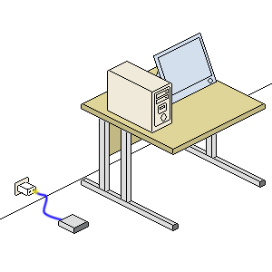

Free
computer Tutorials
|
Free
computer Tutorials
|
|
 home home |
Stay at Home and Learn | |||||
Beginners Guide to going Wireless |
||||||
|
Wireless Adaptors
In the last part, you saw a basic wireless setup. Here's the image:  If you look at the image above, you'll see that the yellow signal is travelling from the wireless router to the PC. However, the computer can't do anything with the wireless signal if it hasn't got a device to detect it. The device you need is called a Wireless Adaptor. For PCs, Wireless Adaptors come in two varieties - ones you plug in to a USB port on your computer, and ones that you fit inside of the computer. Here's a Wireless Adaptors that plugs in to a USB port: And here's one that fits in to the computer:
If you're nervous about opening up your computer, then go for the USB variety. But notice the antenna on the one that fits in to the computer (called a PCI card). These screw out so that you can fit bigger and more powerful antennas. If you have a fairly modern laptop, the chances are it will come with a wireless adaptor inside of it. If it's not modern, then you can add a wireless adaptor to it. These are called PCMCIA cards. They look like this: You probably have a slot for a card like this in your laptop. If you don't, then you can always use one of the USB adaptors. But to go Wireless for your Internet, you'll need some form of Wireless Adaptor for your PC or laptop.
Wireless StandardsWireless adaptors and routers has some strange numbers and a letter associated with them. They start off like this: 802.11 But they will end with a letter. Older forms of wireless adaptors will have a b at end: 802.11b The numbers 802.11 are known as a Standard, and refer to the way one wireless device communicates with another. The letter is a sort of amendment to the 802.11 Standard. An update, if you like. A newer amendemnt is g: 802.11g The 11g wireless adaptor is the most common. The main difference between b and g is one of speed. The more modern 11g can transfer the wireless data at a rate of 54 megabits per second at its maximum. If you look again at the picture at the top of the page, this is the speed of the yellow signal from the router to the computer. Typically, however, the speed of 11g is only about 12 megabits per second! The older 11b standard can move data at a maximum rate of 11 megabits per second, but usually works at about 5 megabits per seond. If you have a broadband connection of 8 megabits per second, you can see how this would be a problem! The latest standard, though, is 802.11n. The N standard promises faster data transfer rates, longer range, and is supposed to more reliable that b and g. The data transfer rates are at a maximum of 540 megabits per second, but in practice will be about 200 megabits per second. Frequency is another important aspect of wirelss signals. The 802.11g operates at a frequency of 2.4 gigahertz. Other household devices also operate at this frequency range. Common ones are microwave ovens and cordless telephones. Bluetooth devices are on this frequency range as well. Devices that operate on the same frequency range can intefere with each other. Most of the Wireless Adaptor on the market at the moment, though, are either 802.11g or 802.11n. But the g routers are beginning to disappear, leaving just the newer n routers. You should be able to buy any 802.11g or 802.11n Wireless Adaptor for your ADSL wireless router.
In the next section, we'll take a look at just what a router is, and some of the jargon you'll encounter.
< --Back one Page | Move on to the Next Part --> |